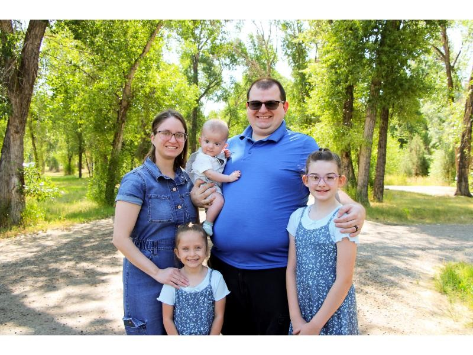
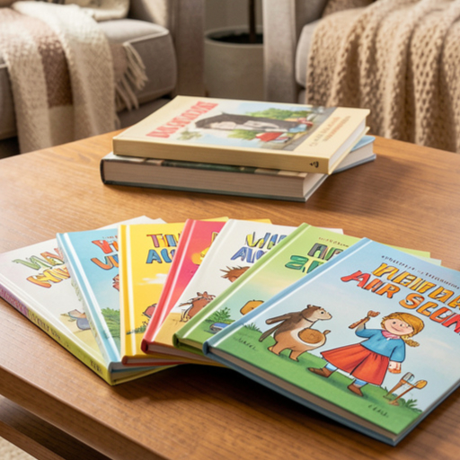

Why I Do What I Do
Beyond academics and work, my family is a central part of who I am. I am a husband and a father to three wonderful children, and family time is one of my greatest sources of motivation and joy. My wife is hearing impaired and has cochlear implants, which has given me a deeper appreciation for communication, patience, and empathy. These experiences have shaped how I approach both personal and professional relationships, reinforcing the importance of understanding and support. I also enjoy creating stories and spending meaningful time with my family, activities that fuel my creativity and balance my technical mindset. Whether managing financial documents such as mortgages and titles or structuring personal and professional tasks, I value organization and clarity. These values carry over into my work ethic and long term goals. I strive to grow not only as a computer science student and professional, but also as a reliable leader, a thoughtful collaborator, and a devoted family man. Together, my background, experiences, and values define the direction I am building for my future.